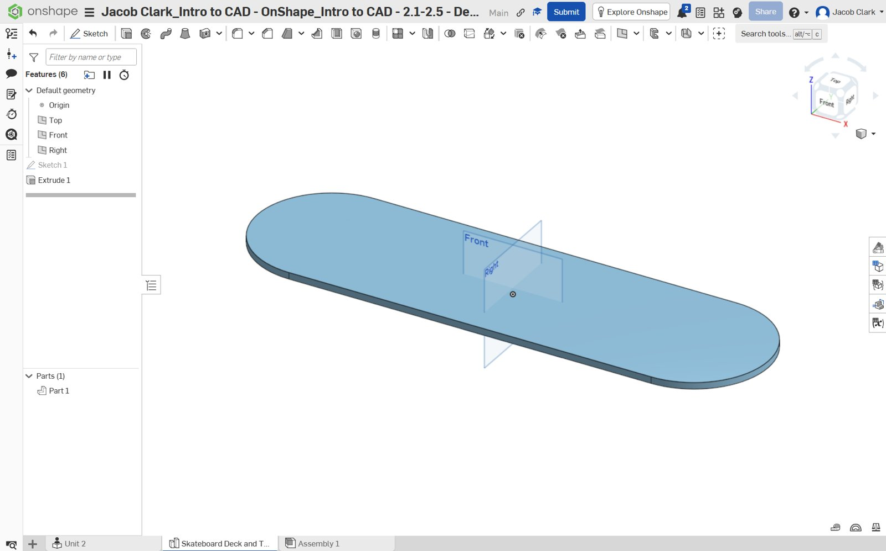
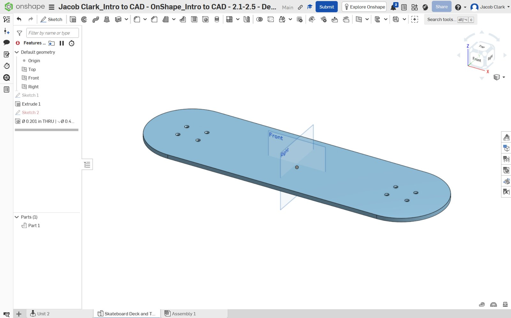
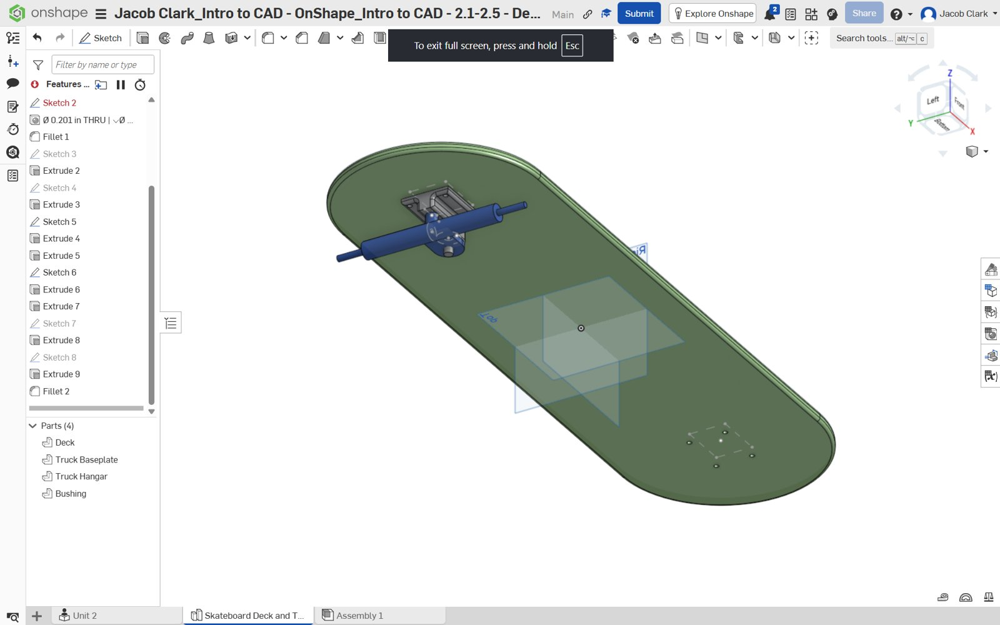
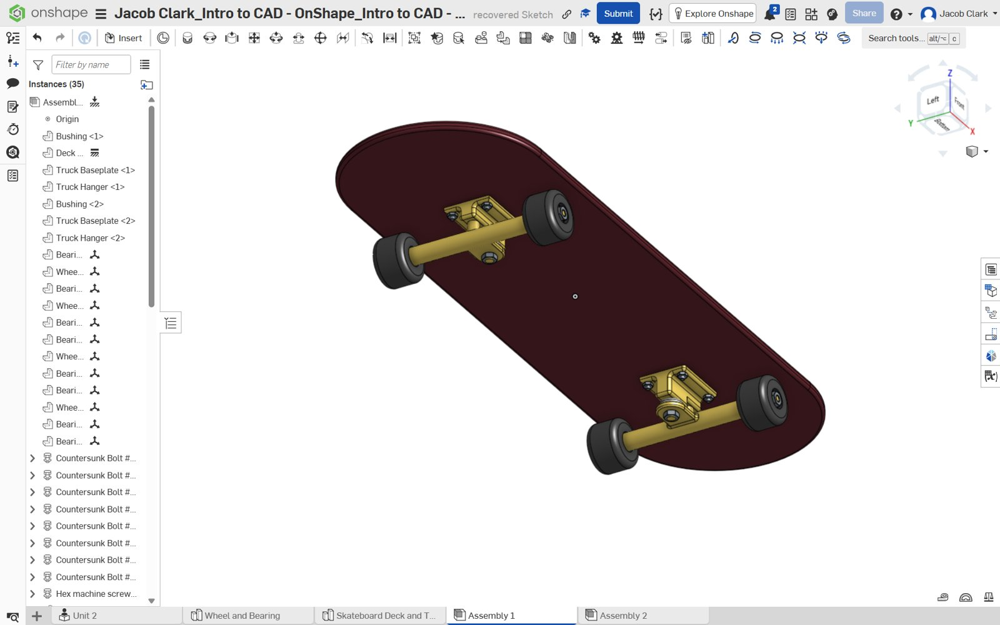
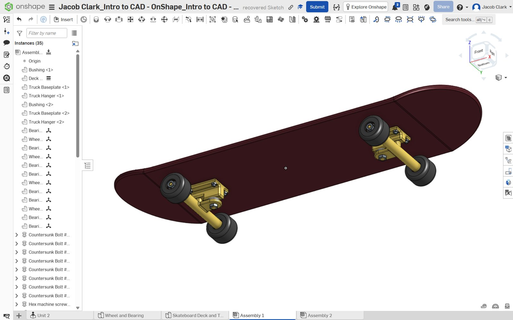

Skateboard CAD Modeling & Assembly
Modeled skateboard components and assembled the finished model as part of an introductory engineering assignment.

Project overview
For UConn's ENGR 1000 course, I followed a guided Onshape assignment to model the parts of a skateboard and assemble them into a complete model.
Part modeling
I modeled the deck, trucks, wheels, bearings, and other components myself using sketches and features such as extrusions, fillets, and holes. Screws and nuts were generated by entering specified parameters rather than drawing them individually.
Assembly
I used Onshape's assembly tools to position the components and build the skateboard, including its two trucks, four wheels, and mounting hardware.
What I practiced
The assignment gave me practice working with feature histories, creating separate parts, and combining them into an assembly. It was a course-guided exercise, not an independently developed skateboard design.
Project gallery
Select any photo to view the full, uncropped image. Use the arrows to browse.




